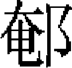
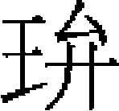

田嗣叔子成 孟德義 鄭義江 鞏彦暉信 劉恩 石高山 隋世昌 賀祉 楚鼎 張均 王昔剌寧 李天祐
田嗣叔，字起宗。其先平陽趙城人，後徙中山。有至性，侍母疾四十餘日，衣不解帶。歲饑，以粟貸貧民，不能償，即取券焚之。金末，河北盜起，嗣叔聚衆自保。後降於睿宗，賜金符，授行軍千户。每戰，率所部爲先鋒，號敢死軍。後與金兵遇於馬黄陂，嗣叔搗其中軍，金兵大亂。俄伏發，倉卒爲流矢所中，創甚。以忠孝勉其二子，言訖而卒。二子：子實、子成。
子成勇悍多智略。從父攻城略地，身先士卒。言於元帥田鎮海，留俘衆有工藝者備任使。鎮海奏聞，從之，命閲實。未幾，饟不繼，將屠其老弱及不習工藝者，子成復進言：「兵爲拯民焚溺，臨陣降者尚不可殺，已爲民而殺之，可乎？散於河北，使自食其力，足以結人心。」又從之，活二千餘家，號種田户，太宗命其兄子實爲總管領之。子成佩父金符，爲弘州人匠總管，後致仕卒。子實孫忠良，見《藝術傳》。
孟德，濟南人。由鄒平縣令、淄州節度使，累官至同知濟南路事。太宗八年，諸王闊端命德爲元帥，佩金符，領濟南軍攻宋徐州、光州，降其衆。六皇后稱制，按只台大王以德爲萬户，攻濠、蘄、黄等州。憲宗三年，命德守睢州。五年，移守海州。宋安撫吕文德寇邊，德敗之，俘其太尉劉海。又與子義從世祖攻鄂州，先登。中統三年，從征李璮。璮平，德以老告歸。
義襲爲萬户，領兵守沂、郯。四年，賜虎符。至元元年，城郯。六年，從山東統軍帖赤攻五河口。宋軍拒南岸，義率兵渡河擊之，宋軍敗走。九年，遷宿州萬户。十一年，宋制置夏貴攻正陽，義奪其戰艦數艘，貴遁去。十二年，從攻楊子橋，有功。十三年，改守杭州。九月，從下福建、温、台等處。十四年，授瑞州路達魯花赤。十月，徙鎮閩州。十六年，授招討使。二十二年，復爲沂、郯萬户。元貞元年，以老辭職。子智襲，授三珠虎符、宣武將軍，爲萬户。延祐二年，進明威將軍，以病去職。子安世襲。
鄭義，冀州棗强人。太師木華黎平河北，義帥其鄉人迎降，授虎衛上將軍、元州路兵馬都元帥，兼景州軍民人匠長官，佩金符。從伐金，戰殁。二弟曰德温，曰甫。德温襲職，從攻徐州，陷陣而死。子澤襲，從萬户史天澤，數有功。年老，弟江代其職。
世祖北征，賜金符，授侍衛親軍副都指揮使，判武衛軍事，兼景州軍民人匠長官。中統三年，李璮據濟南叛，世祖令各州縣長官子弟充千户。於是以江子郇爲千户，領景州新僉軍千餘人，敗賊衆於馬馬橋。璮平，郇以例罷。擢江爲都指揮使，賜虎符，尋改左衛。至元八年，從攻襄陽，殁於陣。郇襲其職，甫以戰功，遷同知冀州節度使事，兼管民萬户。二子：渤，襲都元帥，諡宣靖；澧，性高潔，不樂仕進。澧子

，累官通議大夫、奉元路總管。鞏彦暉，易州人。與兄彦榮俱以武勇稱。彦榮以百户隸千户何伯祥麾下，累有戰功。後告老，以彦暉代之。諸軍伐宋，彦暉從破棗陽，斬首甚衆。萬户張柔駐曹武鎮，彦暉與伯祥别將一軍，破大洪諸寨。宋人選兵二萬救之，彦暉與伯祥逆戰，斬首五百級，生擒其將曹路分等。是夜，宋兵來攻彦暉，率甲士三十人拒之，敵潰走，擒其主將以歸。戰光州，柔軍於東北，夜二鼓，命彦暉率勁卒二百伏西南。五鼓，東北聲振天地，彦暉植梯先登，衆繼之，破其外城。遂急攻，並其子城破之。戰滁州，彦暉率浮渾脱者十人，夜渡塹入欄馬牆，殺守軍三鋪，焚其東南角，排寨木簾，大軍繼之。比曉，拔其城。從大軍攻黄州，諸將壁壘未定，柔遣彦暉伏甲二百於赤壁之下。至夜，宋人果水陸並進，彦暉等侯其半過，擊之，敵奔潰，生擒十七人。師還，又破張家寨。從攻壽州，奪其門，生擒三人以出。從攻泗州，諸將集城下，爲塹水所阻。兩軍交射如雨，彦暉被重甲徑渡。敵將來禦，彦暉刺其胸，搏殺之。衆畢渡，克其外城。尋登其月城，彦暉部將顧伯祥陷城中，不能出。乃與驍將王進反求之，翼伯祥以歸。事聞，賜彦暉銀符。憲宗九年，世祖伐宋渡江，次武昌。宋援兵四集，來挑戰。彦暉逐之，中伏，圍彦暉數匝，彦暉矢盡，短兵接，身被重創。度不免，遂自投水中。敵援之出，載歸江州，見宋將不屈，問以事不對，竟死，年五十六。
長子信襲。授銀符、易州等處管軍總把。中統三年，從征李璮。至元四年，從元帥阿朮南征。九年，從攻樊城，先登，奪其土城，焚西南角樓。十一年，從丞相伯顔攻沙陽堡，率勇士五十人焚其寨，遂破之。是年，從渡江，直抵鄂州下，擒宋將江路分以歸。十二年，戰丁家洲，殺宋兵七十餘人，奪戰艦二。江南平，以功擢武略將軍、管軍千户，鎮太平州。十六年，以疾辭。子思明、思温、思恭。思明初患目疾，以思温襲。及思温卒，而思明疾愈，復以思明襲。思明卒，以思恭襲，改懷孟萬户府管軍下千户，佩金符。
劉恩，字仁甫，洺州洺水人，後徙威州。恩以材武隸軍籍，累功爲百户。俄遷管軍總管，佩銀符，太傅府經歷。從伐蜀，數有戰功。中統三年，都元帥紐璘遣恩受劉整降，賜金符。至元三年，宋將以戰船五百艘載甲士三萬人屯於江上游，先以一萬人據雲頂山，欲取漢州。恩率千人渡江，與戰，敗之。授成都路管軍萬户。六年，從平章賽典赤攻嘉定，過九頂山，與宋軍遇，生擒其部將十八人，械送京師。
九年，從皇子西平王、行省也速帶兒征建都，恩將游兵爲先鋒，一日三戰，皆捷。時大軍久駐，食且盡，恩招諭諸蠻，得糧三萬石、牛羊二萬頭，士氣益振。建都因山爲城，山有七頂，恩奪其五，並斷其汲道，建都乃降。入朝，升管軍萬户，戍眉州。十二年，昝萬壽以嘉定降，恩移戍嘉定。安西王遣使召恩至六盤山，問曰：「江南已平，四川未下，奈何？」恩曰：「以不徇私之重臣，奉詔督責之，則半年可下矣。」王即遣恩與木兒赤乘傳以聞。帝然之，命丞相不花等行樞密院於西川，授恩同僉院事。十五年，重慶降，不花遣恩招降反側，旬月之間，得大小州縣六十四。入朝，賞賚有加，授四川西道宣慰使。
改副都元帥，率蒙古、漢軍萬人征斡端，進都元帥，宣慰使如故，賜宿烈孫皮衣一、錦衣一及弓刀諸物。師次甘州，奉詔留屯，得粟二萬餘石。十八年，命恩進兵斡端。海都將玉論亦撒率兵萬人拒戰，游騎先至，恩設伏以待，大敗之。海都又遣八把以兵三萬來攻，恩料衆寡不敵，斂兵而退。二十二年，授僉行樞密院事。卒，子德禄襲，成都管軍萬户。
石高山，德興人。父忽魯虎從太祖定中原，太宗賜以東昌、廣平四千餘户，遂徙居廣平之洺水。
中統三年，高山因平章塔察兒入見世祖，因奏曰：「昔太祖皇帝所集按察兒、孛羅、窟里台、孛羅海拔都、闊闊不花五部探馬赤軍，金亡之後，散居牧地，多有入民籍者。宜加招集，以備驅策。」帝大悦，曰：「聞卿此言，猶寐而覺。」即命與諸路招之，既籍其數，仍命高山佩銀符領之。
四年，授管軍總管，鎮息州。軍令嚴肅，寇不敢犯，賜金符獎之。至元八年，從取光州，克棗陽，進攻襄、樊，皆有功。十年，從阿朮略地淮南。十一年，從平江南，以功遷顯武將軍。十二年冬，丞相伯顔命以所部兵取寧國，下令無虜掠。既至城下，喻以禍福，守將開門降，秋毫無犯。復從至焦山，與宋將孫虎臣、張世傑轉戰百餘里，殺獲甚多。賜金虎符，進信武將軍，鎮高郵。
伯顔朝京師，帝問：「有瘦而善戰者，朕忘其名。」伯顔以高山對，且盛言其功。帝即召見，命高山自擇一大郡以佚老，高山辭曰：「臣筋力尚壯，猶能爲國驅馳，豈敢爲自安計！」帝大悦，進顯武將軍，率所部北征，屯亦脱山。十六年，命同忽都魯領三衛軍，戍和林屯田，以給軍儲。二十四年，從討乃顔，有功，賜三珠虎符、蒙古侍衛親軍都指揮使，守衛東宫。成宗憫其老，以其子闊闊不花襲職，賜鈔三百錠。大德七年，卒於家，年七十六。
隋世昌，其先登州棲霞人。父寶，徙萊陽，金末管軍都統，領鎮行村海口。太宗下山東，寶迎降，授萊陽令。歷萊州節度判官，終高密令。世昌，其第四子也。善騎射，身長八尺，鍛渾鐵爲鎗，重四十餘斤，能左右擊刺，選充隊長。宋兵攻海州，世昌戰卻之。從攻漣水，世昌樹雲梯攀緣而上，衆從之，遂克其城，授馬軍千户。
中統元年，宋將夏貴軍淮南新城，世昌夜乘艨艟抵城下。宋兵出戰，斬首數百級。未幾，漣水復叛歸宋，世昌軍於東馬寨，擊敗宋兵。三年，改步軍千户，還鎮行村海口。至元元年，朝議分揀正軍奥魯，授萊陽縣諸軍奥魯長官。
七年，遷淄萊萬户府副都撫鎮，守萬山堡，建言修一字城以圍襄陽。遷管軍千户。九年，敗宋兵於鹿門山。元帥劉整築新城，使世昌總其役。世昌立砲簾於樊城攔馬牆外，夜大雪，城中矢石如雨，世昌不肯卻，砲簾卒立。宋人列艦江上，世昌乘風縱火，燒其船百餘。樊城出兵鏖戰，世昌創甚，血漬衣甲，勇氣愈壯。樊城下，遷武略將軍。
從伯顔伐宋，攻新城。世昌坎其城而登，中數矢，傷臂，昏眩墜地，少蘇復進，遂拔之。明日，丞相伯顔視所坎城，高一丈五尺餘，論功第一。從諸軍渡江，抵南岸，率蒙古哈必赤軍步戰，大敗宋兵，斬其將一人。十二年，從敗賈似道於丁家州，以功賜金符。十三年，圍揚州，世昌絶其糧道，兼搜湖泊，宋兵聞鐵鎗名，不敢近。揚州平，充四城兵馬使。從平章阿朮入覲，授宣武將軍、管軍總管。十四年，平野人原、司空山等七寨賊，進安撫使，佩金虎符，鎮澉浦。十七年，拜定遠大將軍。二十三年，改沂、郯上副萬户。世昌前後數百戰，徧體金瘡，竟以是卒，年六十一。追封定海郡侯，諡忠勇。子國英嗣。
賀祉，益都人。父進，元帥左監軍，守淄州，改千户，守膠州。祉初以質子入宿衛，至元六年，襲父職爲千户，仍守膠州。七年，宋兵攻膠州，祉固守，卻之。十年，領舟師五百艘爲先鋒，攻五河口。軍還，殿後。時宋兵以巨索横截淮水，號渾江龍，祉用刀斷之，卻其救兵，清河城遂降。攻高郵、寶應，戰淮安，城下，丞相伯顔以其功上聞，授武節將軍。攻泗州，獲戰船五百艘。還，從右丞别乞里迷失入朝，帝賜以弓矢，錦衣、鞍勒，加宣武將軍，鎮新城。絶淮安、寶應糧道，獲戰船六百艘及器械，上於行樞密院，遂命領寶應軍民事。十四年，特賜金虎符、懷遠大將軍。二十年，討建寧賊黄華，有功。二十四年，以征交趾，請行，湖廣行省檄令守輜重，屯思明州。軍還至建康，卒。
楚鼎，安豐蒙城人。父

，金壽春府防禦使，守宿州。太宗十一年，以州降。阿朮魯命守之。宋兵攻陷宿州，戰殁，宋人囚鼎於鎮江府十有四年，會赦免。至元十二年，大兵渡江，鼎從知太平州孟之 降。行省遣鼎諭寧國府守將孫世賢，下之，承制授鼎管軍總管，加懷遠大將軍，鎮寧國，剿建平、廣德諸盜。鼎與權萬户孛羅台護送徽州招撫使李銓子漢英至徽州，諭銓降。十三年，漢英與李世達叛，旌德、太平兩縣附之。鼎與兀忽納進兵，用徽人鄭安之策，按兵徐入，不血刃而亂定。十五年，鼎始受符印。十八年，東征日本，鼎率千餘人從左丞范文虎渡海。大風舟壞，鼎挾破舟板，漂流三晝夜，至一山，會文虎船，因得達高麗之金州合浦。後病卒。
降。行省遣鼎諭寧國府守將孫世賢，下之，承制授鼎管軍總管，加懷遠大將軍，鎮寧國，剿建平、廣德諸盜。鼎與權萬户孛羅台護送徽州招撫使李銓子漢英至徽州，諭銓降。十三年，漢英與李世達叛，旌德、太平兩縣附之。鼎與兀忽納進兵，用徽人鄭安之策，按兵徐入，不血刃而亂定。十五年，鼎始受符印。十八年，東征日本，鼎率千餘人從左丞范文虎渡海。大風舟壞，鼎挾破舟板，漂流三晝夜，至一山，會文虎船，因得達高麗之金州合浦。後病卒。
張均，濟南人。父山，從軍伐宋，以功爲總把，戰殁。均襲百户，從親王塔察兒攻鄂州，面中流矢。中統三年，從征李璮有功，以總帥命升千户，守淄州。至元六年，從左丞董文炳攻宋五河口，轉戰濠州北，遇其伏兵，均力戰敗之。十年，攻連州，奪孫村堡。十二年，賜金符，授忠翊校尉、沂郯翼千户。從攻蕪湖，奪宋戰船，俘四十餘人。又從阿塔海戰有功，加武略將軍。十四年，賜虎符，加宣武將軍。
二十二年，擢松江萬户。二十四年，從鎮南王征交趾。二十六年，從北征，擢明威將軍、前衛親軍副都指揮使。三十年，以扈從世祖親征乃顔功，受賞。成宗即位，命屯田和林。大軍討西北叛王，軍糧未嘗乏絶。大德元年，改和林等處副元帥。歷宣慰司同知，擢都元帥，加鎮國上將軍。延祐元年，卒。子世忠，襲前衛親軍副都指揮使。
王昔剌，保定人。初事世祖，以其有勇略，賜名昔剌拔都。從攻釣魚山及阿里不哥，累功，賜金符，授武衛親軍千户。中統三年，從征李璮於濟南。四年春，元帥阿朮經略河南，遣昔剌將蒙古、漢軍，復立宿州。至元六年，賜虎符，升海州萬户。引兵攻鹽林山寨，多所俘獲。十年，授同僉東川行樞密院事。十五年，從攻夔府，有功。十六年，徙鎮萬州，卒於軍。二子：宏、寧。
宏先佩金符，爲左衛千户。及樞密院擬寧襲武職，寧讓於宏，於是授宏中衛都指揮使，佩父虎符，而以寧代宏爲千户，佩金符。寧從阿剌台、憨合孫北征，追擊脱脱木兒於阿納秃阿之地。師還，又從别急里迷失等擊賊外剌，斬首百餘級。復從忽魯忽孫北征，有功。升右衛親軍總管，後改前衛都指揮使司、僉事。子處恭，襲宏職，仕至侍御史。
李天祐，修武人。以百户從大兵破蔡州，又從攻釣魚山有功，轉均州萬户府都鎮撫。從破襄陽，轉戰渡江，率驍勇千人登戰艦，横出江口。宋人列船以待，天祐持長矛鈎其船而攻之，斬獲百餘級，宋人奪氣。擢敦武校尉、總管荆南迤北站赤千户。五年，遷武略將軍、荆湖北道屯田總管。募民能田者，躬自率之。尤習於水利，歲收數倍。卒。年七十一。
本章完!